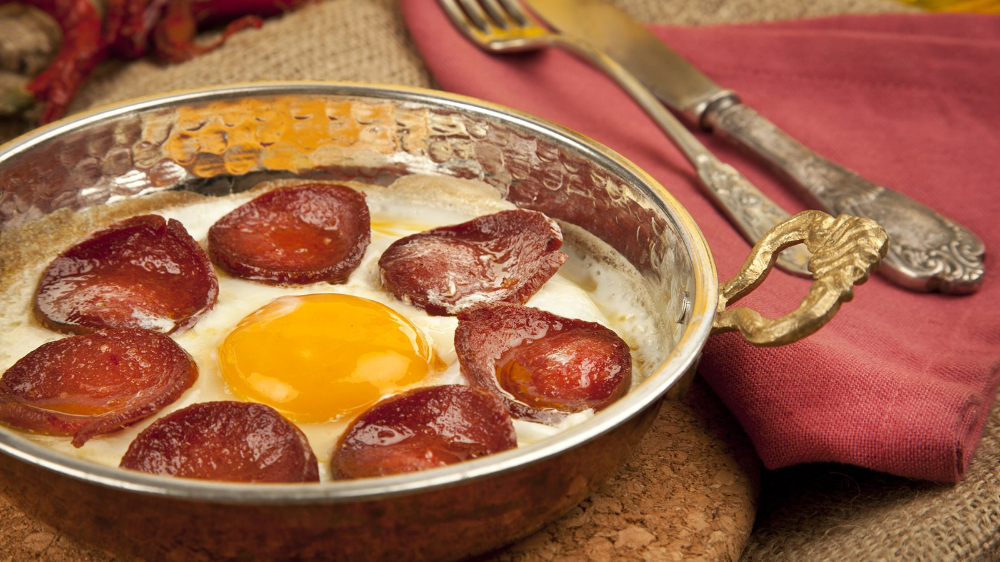

Sucuk mit Ei

Sucuk mit Ei
Sucuk mit Ei is a turkish recipe containing sucuk (turkish salami) and whole eggs
It is one of my favourite dishes because it tastes good, is nutritious and fast yet simple.
Ingredients: for one serving
- 3 Whole eggs
- Sucuk (turkish garlic salami)
- optional: butter
Steps:
- Cut sucuk in slices
- place it on the pan and heat up
- flip the slices when cooked enough
- crack your eggs open and put it on the pan
- wait till its cooked